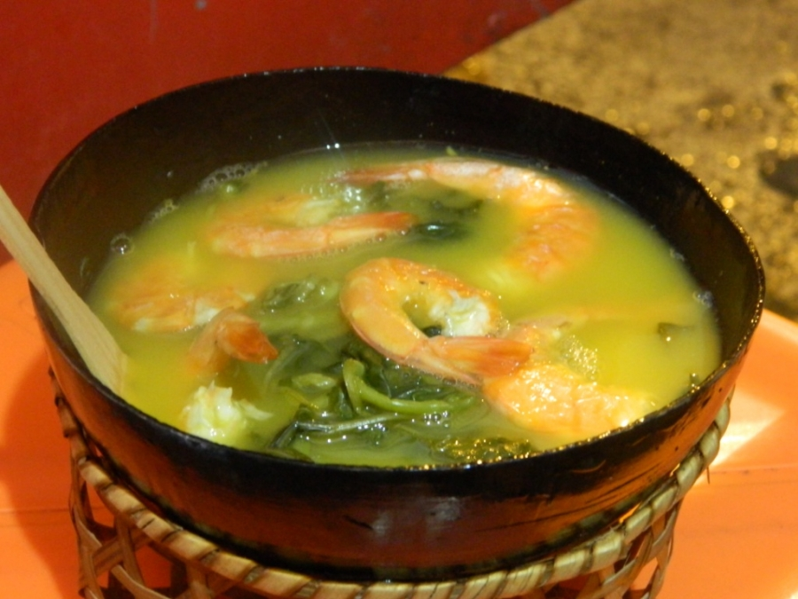

Tacacá do Norte

De origem indígena, o tacacá é uma comida típica da região
amazônica. O caldo amarelado à base de mandioca, chamado de
tucupi, preparado com goma, camarão e jambu é servido bem quente
em cuias.
INGREDIENTES
- 2 xícaras (chá) de tucupi
- 1 dente de alho
- 1 folha de chicória do pará
- 1 colher (café) de sal
- 1 pimenta de cheiro do pará cortada ao meio
- 1/4 de de maço de jambu (despreze os talos mais grossos)
- 4 camarões secos
- 30 g de goma
- 300 ml de água
MODO DE PREPARO
- Ferva o tucupi por 15 minutos.
- Agora coloque o alho, a chicória, o sal, o jambu e a pimenta de cheiro (a gosto) e cozinhe por mais 5 minutos ou até os talos do jambu ficarem macios.
- Em outra panela, dissolva a goma na água e cozinhe até adquirir transparência.
- Afervente os camarões secos separadamente.
- Em cuias apropriadas, coloque a goma até preencher um terço e complete com o Caldo temperado do tucupi e as folhas de jambu.
- Finalize com um camarão para cada tacacá.
Gostou da receita? Dê sua avaliação: 0.0